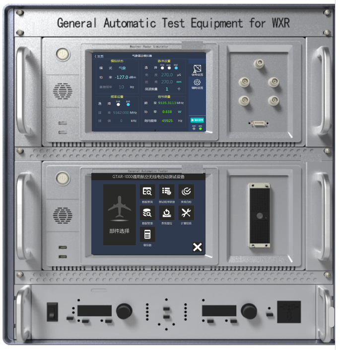
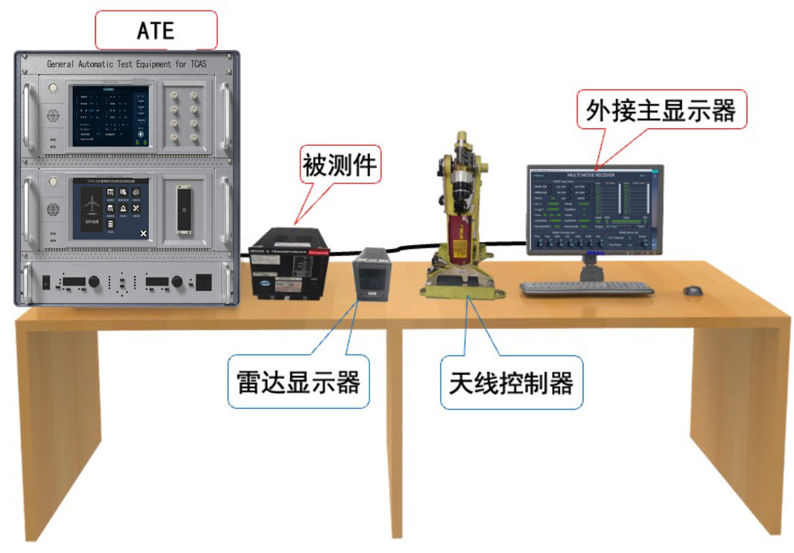

GTWR-1000
Request QuoteWXR Automatic Test System
GTWR-1000 is an automatic test equipment designed for airborne weather radar (WXR) transceivers.
The system integrates an automatic tester, weather radar simulator, and programmable AC power supply into one unified platform.
It supports development, debugging, factory acceptance, routine maintenance, and repair testing for weather radar systems.
The software platform enables TPS development and execution based on CMM requirements, ensuring compliance with standard maintenance procedures.
Mature TPS libraries allow fast deployment, significantly improving testing efficiency for MRO and engineering applications.


| LRU | ATA | OEM | PN |
|---|---|---|---|
| WRT-2100 | 34-40-58 | Collins | 822-1710-001, 002, 301, 302, 311, 312, 214, 411 |
| RTA-4B | 34-41-36 | Honeywell | 066-50008-0407, 0406 |
| WRT-701X | 34-45-47 | Collins | 622-5132-633, 622 |